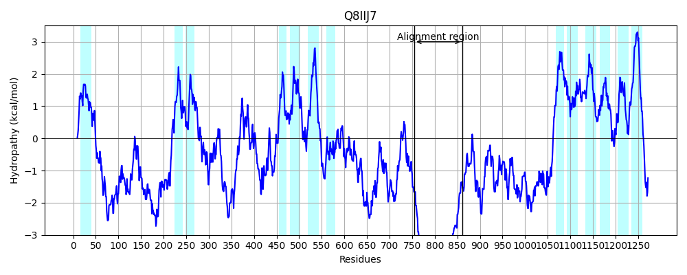

Hit Accession: Q8IIJ7
Hit TCID: 2.A.1.91.1
Hit Description: gnl|BL_ORD_ID|16345 gnl|TC-DB|Q8IIJ7|2.A.1.91.1 Uncharacterized protein OS=Plasmodium falciparum (isolate 3D7) OX=36329 GN=PF3D7_1117000 PE=4 SV=2
Mach Len: 111
e:0.000000
Query TMS Count : 1
Hit TMS Count: 13
TMS-Overlap Score: 0.000000
Predicted Substrates:None
BLAST Alignment:
| Protein Hydropathy Plots: | |
|---|---|
|  | |
Pairwise Alignment-Hydropathy Plot: | |